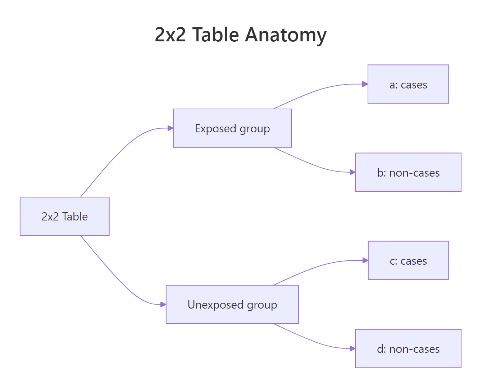
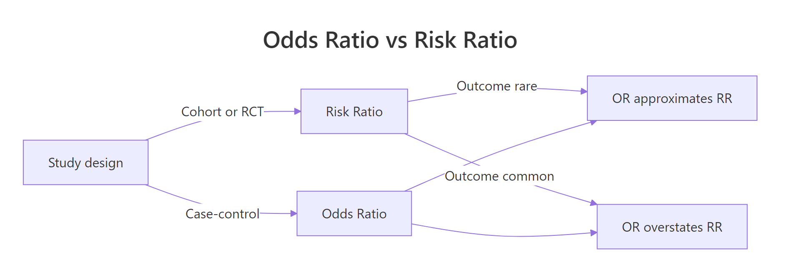
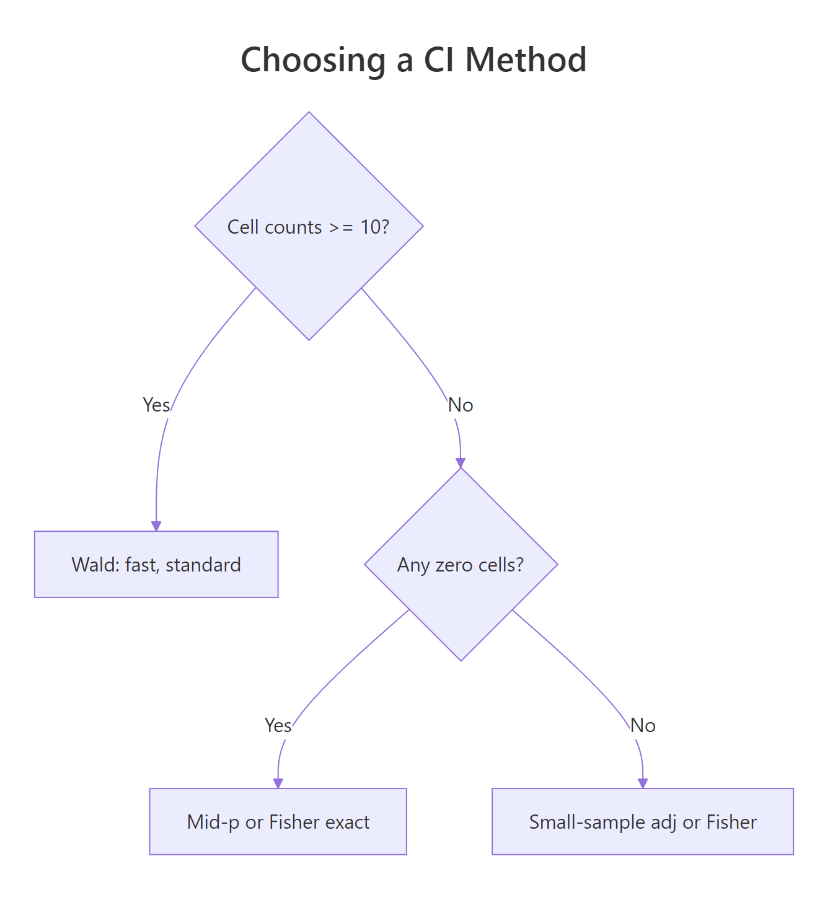
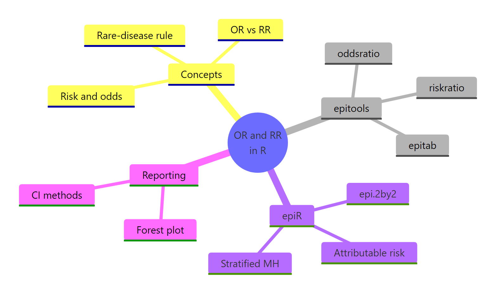

Odds Ratios & Relative Risk in R: epitools & epiR Complete Guide
The odds ratio compares the odds of an outcome between two groups, while the relative risk compares the probabilities directly. Both summarise how strongly an exposure links to an outcome in a 2x2 table, and R gives you them in one line of code.
What's the difference between an odds ratio and relative risk?
Picture a small lung-cancer study: 30 of 100 smokers develop cancer, while 5 of 100 non-smokers do. The relative risk says smokers have six times the cancer probability (30% vs 5%). The odds ratio says smokers have roughly eight times the cancer odds. Same data, different framing, different number. Let's build that 2x2 table in base R and compute both ratios by hand so the formulas stop being abstract.
The relative risk of 6.0 means a smoker is six times more likely to develop cancer than a non-smoker. The odds ratio of 8.14 looks bigger, and that gap is not a mistake. The cross-product (a*d) / (b*c) always exaggerates the relative risk when the outcome is common, and the two converge only when the outcome is rare.
Every 2x2 table in epidemiology has the same four cells. Naming them now will pay off in every package below.
- a = exposed cases (top-left)
- b = exposed non-cases (top-right)
- c = unexposed cases (bottom-left)
- d = unexposed non-cases (bottom-right)

Figure 1: The four cells of a 2x2 table label exposed and unexposed groups by case status.
The risk ratio uses row totals (people at risk), so it asks "what fraction of each group got sick?". The odds ratio uses the cross-product, so it asks "how do the odds of getting sick compare across groups?". Risks are bounded between 0 and 1, but odds run from 0 to infinity, which is why the OR can drift far from the RR.
Try it: A drug trial finds 12 of 200 treated patients had a stroke and 24 of 200 control patients had a stroke. Build a 2x2 matrix called ex_drug_tab and compute the relative risk by hand.
Click to reveal solution
Explanation: Treated patients had half the stroke risk of controls. RR < 1 signals a protective effect.
How do you compute an odds ratio in R with epitools?
The oddsratio() function from epitools automates everything in the previous block and adds a confidence interval and p-value. The function expects a 2x2 matrix or two factors, and it returns an $measure matrix with the OR plus its lower and upper bounds. We will use the built-in Titanic dataset, which records survival by sex, class, and age, and start with the simplest split, sex versus survival.
The reference row is "Male" with OR fixed at 1, and "Female" carries the comparison: the odds of surviving were about 10.1 times higher for women than for men, with a 95% confidence interval from 8.0 to 12.8. The interval is far above 1 and the Fisher p-value is essentially zero, so the association is nowhere near a fluke.
epitools::oddsratio() actually supports four estimation methods, and switching between them costs one argument. Comparing the four side by side reveals when the choice matters and when it doesn't.
For this large sample (over 2,000 passengers) all four methods agree to within 1%. The differences only matter for small or sparse tables. We will revisit method choice properly in the "Which CI method?" section after seeing relative risk and epi.2by2().
rev argument accepts "rows", "columns", or "both" and saves you from re-indexing the matrix.Try it: Using the full 4D Titanic array, collapse to a 2x2 of class (1st vs 3rd) versus survival, then compute the odds ratio with oddsratio(). Save the table to ex_class_tab and the OR to ex_class_or.
Click to reveal solution
Explanation: The 3rd-class odds of survival were about one-fifth the 1st-class odds. The CI excludes 1, so the gap is significant.
How do you compute relative risk in R with epitools?
Relative risk uses riskratio() from the same package, but the table layout convention is the opposite of oddsratio(). riskratio() expects the non-event in the first column and the unexposed group in the first row, so the top-left cell is "no event, no exposure". Get this wrong and the function silently returns the inverse, which is a classic bug.
The risk ratio is 3.45: women's probability of survival was about 3.5 times higher than men's. Compare that with the odds ratio of 10.15 from the previous section. Survival on the Titanic was not rare (over a third of passengers survived), so the rare-disease assumption is violated and the OR overstates the multiplicative effect. The RR is the more honest summary for this dataset.
oddsratio() puts the event first; riskratio() puts the non-event first. Check ?riskratio before every call, or pass rev = "columns" to fix a mismatched table.Try it: Compute the risk ratio of dying (not surviving) for males versus females on the Titanic. Save the result to ex_male_die_rr.
Click to reveal solution
Explanation: Men died at nearly three times the rate of women. RR is the inverse of the female survival RR, as expected.
How does epiR's epi.2by2() compare?
epitools returns a single measure per call. epi.2by2() from the epiR package returns the whole epidemiology toolkit in one shot: incidence risk ratio, odds ratio, attributable risk, attributable fraction in the exposed (AFe), and attributable fraction in the population (AFp). It also accepts the natural 2x2 layout, with exposed/unexposed as rows and event/no-event as columns, which is the same orientation people use on paper.
In one call we now have everything: men were 2.94x more likely to die (RR), with 10.15x the odds (OR), and 66% of male deaths can be attributed to being male (AFe) under the strong causal-interpretation assumption. The attributable fractions answer "how much of the burden would vanish if the exposure were removed?", a question RR alone cannot answer.

Figure 2: Study design and outcome frequency determine when the odds ratio approximates the risk ratio.
cohort.count returns RR + OR + attributable risk; case.control drops RR (you cannot estimate it from a case-control sample); cohort.time adds incidence rate ratios; cross.sectional returns prevalence ratios. Pick the one that matches your study design.Try it: Re-run epi.2by2() on the same table with method = "case.control" and save the result to ex_cc. Inspect ex_cc$massoc.summary and explain why the risk ratio row is missing.
Click to reveal solution
Explanation: Case-control studies sample on the outcome, so risk in the source population isn't observed. The OR is identifiable; the RR isn't.
Which CI method should you choose?
The four oddsratio() methods (Wald, Fisher exact, mid-p, small-sample) and epi.2by2()'s score interval all agree on large balanced samples but diverge sharply on small or sparse tables. Wald is the textbook normal-approximation interval and the easiest to compute by hand; Fisher's exact is the gold standard for small samples; mid-p is a less conservative exact method; and the small-sample correction adjusts Wald for thin cells.

Figure 3: Decision guide for picking the right confidence-interval method.
The decision rule is straightforward: with all cell counts at 10 or more, Wald is fine. With cell counts under 10 but no zeros, prefer the small-sample correction or epi.2by2()'s score interval. With any zero cell, use Fisher exact or mid-p, never Wald.
The Wald estimate of 12 has a 95% CI that just dips below 1 (0.88 lower bound). Fisher's exact widens that interval dramatically (0.64 to 514), and the difference matters: Wald says "borderline significant", Fisher says "large but very uncertain". With n = 14 and one cell at 1, the Wald interval is unsafe to publish.
epi.2by2().Try it: Insert a single zero into the small table (set the (1,2) cell to 0) and rerun the four methods. Notice which methods break.
Click to reveal solution
Explanation: Wald, Fisher and mid-p all yield Inf because the conditional MLE for the OR is undefined when one cell is zero. Only the small-sample correction (which adds 0.5 to every cell first) returns a finite estimate.
How do you visualize odds and risk ratios with confidence intervals?
A forest plot is the standard way to display ORs side by side. Each row is a subgroup, the dot is the point estimate, and the horizontal line is the CI. A vertical reference line at 1 marks "no effect", and a log-scaled x-axis makes a 2-fold increase look the same size as a 2-fold decrease. We will plot the OR for survival across each Titanic class.
The 3rd-class OR is the smallest at 4.1, meaning women in steerage still had a survival edge but a smaller one than 1st-class women, who saw a 67-fold advantage. All four CIs sit far above 1, so the female advantage was real in every class. Log-scaling the x-axis is what makes the visual comparison fair: an OR of 3 and an OR of 1/3 take up equal visual distance from the null line.
Try it: Add a fifth row to class_or_df with class = "Overall" and the unstratified Titanic OR (the value of or_default from earlier). Re-plot.
Click to reveal solution
Explanation: The pooled OR (10.1) sits between the 1st and 3rd-class subgroup ORs, illustrating Simpson-style averaging across strata.
Practice Exercises
Exercise 1: Vaccine RCT, RR and number needed to treat
A vaccine trial enrolls 5000 people: 2500 vaccinated, 2500 placebo. 25 vaccinated and 100 placebo recipients contract the disease. Build the 2x2 as my_vacc_tab, compute the relative risk and the number needed to treat (NNT), defined as 1 / (risk_placebo - risk_vaccine). Save NNT as my_nnt.
Click to reveal solution
Explanation: Vaccination cut disease risk to a quarter. NNT = 33 means treating 33 people prevents one case.
Exercise 2: Case-control study with epi.2by2
A case-control study of pancreatic cancer enrolls 200 cases and 200 controls. 80 cases and 30 controls report heavy coffee consumption. Build the table as my_coffee_tab, run epi.2by2() with method = "case.control", and verify the OR by hand using the cross-product formula.
Click to reveal solution
Explanation: Both routes produce the same Wald OR. Heavy coffee consumers had nearly four times the odds of being a case in this contrived sample.
Exercise 3: Build your own summary function
Write my_summarise_2by2() that takes a 2x2 matrix m and returns a one-row data frame with columns RR, OR, OR_to_RR, and rare_disease_ok (TRUE if the overall outcome rate is under 10%). Test it on smoke_tab and my_vacc_tab.
Click to reveal solution
Explanation: When the disease is common (smoke_tab, 17.5% prevalence), OR/RR drifts above 1. When it's rare (vacc, 2.5%), OR and RR converge to within a few percent.
Complete Example: Aspirin and stroke prevention
A made-up but realistic cohort study follows 10,000 adults for five years, half on daily aspirin. 80 aspirin users have a stroke; 160 controls do. We want a publication-ready summary of the effect.
A publication-style sentence might read: "Daily aspirin halved the 5-year stroke risk compared with control (RR 0.50, 95% CI 0.39 to 0.65; OR 0.49, 95% CI 0.38 to 0.64)." RR and OR agree closely because the outcome (stroke in 2.4% of the cohort) is rare. Attributable risk shows aspirin prevents 16 strokes per 1000 person-years, the most clinically useful framing.
Summary
The two ratios answer different questions and live in different parts of the epidemiology toolbox.
| Use case | Best measure | R function |
|---|---|---|
| Cohort study, RCT | Risk ratio | epitools::riskratio(), epi.2by2(method = "cohort.count") |
| Case-control study | Odds ratio | epitools::oddsratio(), epi.2by2(method = "case.control") |
| Cross-sectional, rare disease | Either (they agree) | epi.2by2(method = "cross.sectional") |
| All measures + attributable risk | epi.2by2() | epiR::epi.2by2() |
Quick-reference for CI methods:
- Wald, fast, fine when every cell is 10 or more
- Small-sample, Wald-style with cell adjustments, good for thin tables without zeros
- Fisher exact, gold standard for small samples or any zero cell
- Mid-p, exact but less conservative than Fisher
- Score (epi.2by2), well-behaved across sample sizes, the default in many epidemiology textbooks

Figure 4: Concept map of odds ratios and relative risk in R.
References
- Aragón TJ. epitools: Epidemiology Tools. CRAN. Link
- Stevenson M, Sergeant E. epiR: Tools for the Analysis of Epidemiological Data. CRAN. Link
- Rothman KJ, Greenland S, Lash TL. Modern Epidemiology, 3rd ed. Lippincott Williams & Wilkins (2008).
- Brophy JM. Mostly Clinical Epidemiology with R, Chapter 4: Contingency tables and measures of association. Link
- Szumilas M. Explaining odds ratios. J Can Acad Child Adolesc Psychiatry 19(3): 227-229 (2010). Link
- Davies HTO, Crombie IK, Tavakoli M. When can odds ratios mislead? BMJ 316: 989-991 (1998). Link
- Knol MJ, et al. Estimating measures of interaction on an additive scale for preventive exposures. Eur J Epidemiol 26(6): 433-438 (2011).
Continue Learning
- Chi-Square Test of Independence in R, test whether two categorical variables are associated before quantifying the effect with an OR or RR.
- Fisher's Exact Test in R, the small-sample test that produces exact p-values and the same CI engine used by
oddsratio(method = "fisher"). - Categorical Data in R: Frequency Tables, Crosstabs & Mosaic Plots, build the 2x2 tables that feed every method on this page.